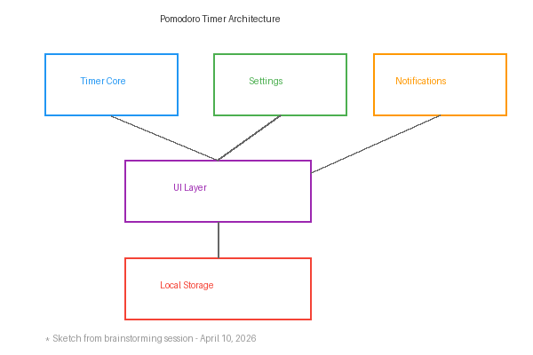

Attendance
The following team members were present at the meeting:
- Ajay Anubolu (Team Lead)
- Jane Smith (Designer)
- Bob Johnson (Developer)
- Alice Williams (Developer)
- Carlos Garcia (QA)
Absent: David Lee (excused)
Agenda
- Review project requirements
- Discuss timer functionality and user experience
- Assign initial tasks
- Set deadlines for first sprint
Unfinished Business
- Team name selection — still need a final vote
- GitHub repository setup: repo link pending
New Business
-
Timer Core Features:
- 25-minute work sessions
- 5-minute short breaks
- 15-minute long breaks after 4 sessions
-
UI Requirements:
- Clean, minimal interface
- Visual progress indicator
- Sound notification when timer ends
-
Tech Stack Decision:
The team agreed to use vanilla HTML, CSS, and JavaScript to keep things simple.
View proposed timeline
Week 1: Wireframes and design
Week 2: Core timer logic
Week 3: UI implementation
Week 4: Testing and polish
Diagrams
Below is the whiteboard diagram from our brainstorming session:

Miscellaneous Comments
Jane suggested we look at existing Pomodoro apps for inspiration. She specifically mentioned Forest and Focus Keeper.
Carlos raised a concern about accessibility — we need to ensure the timer works well with screen readers.
Next meeting is scheduled for April 17, 2026 at 3:00 PM.